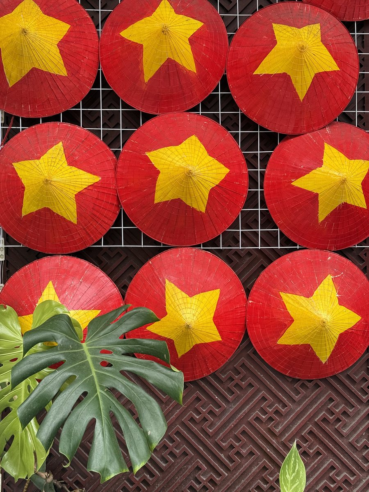
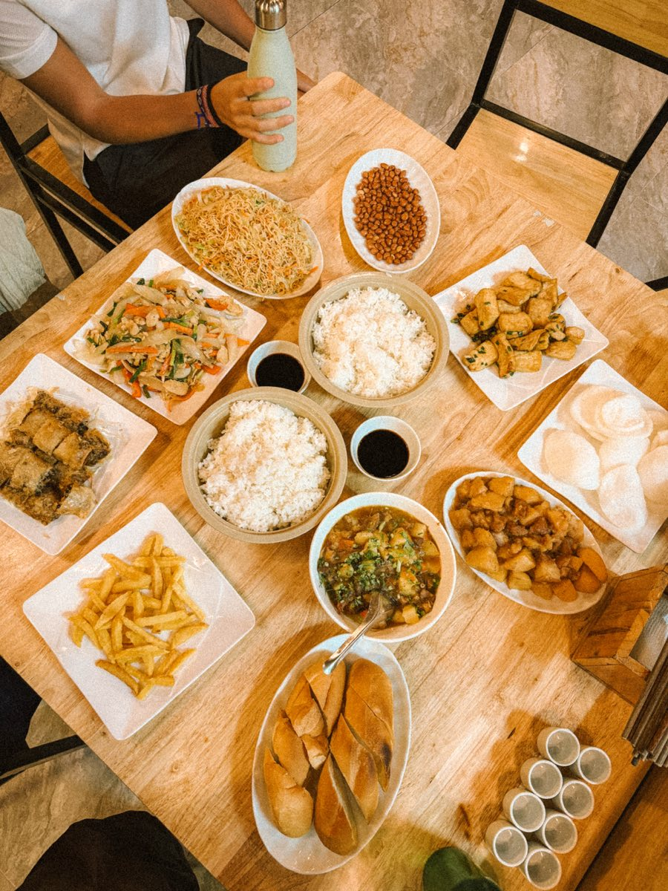
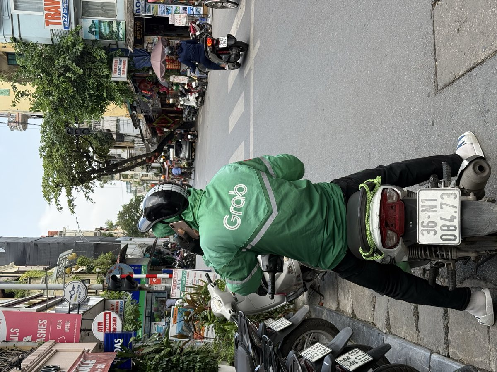
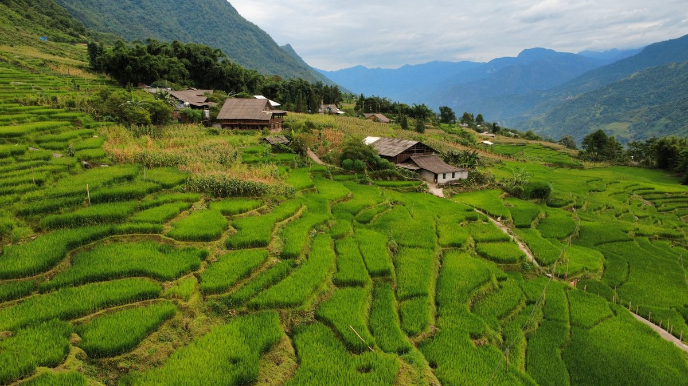
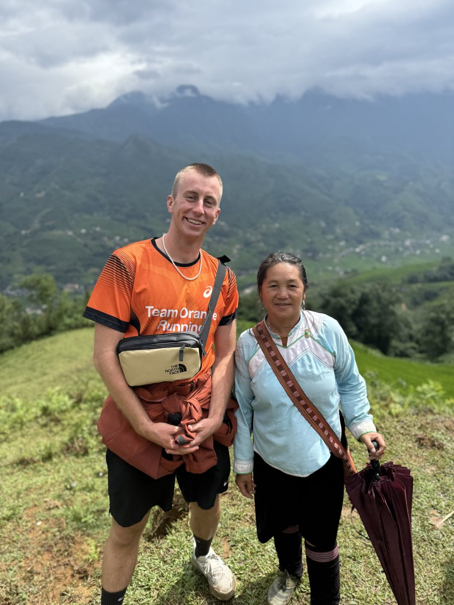
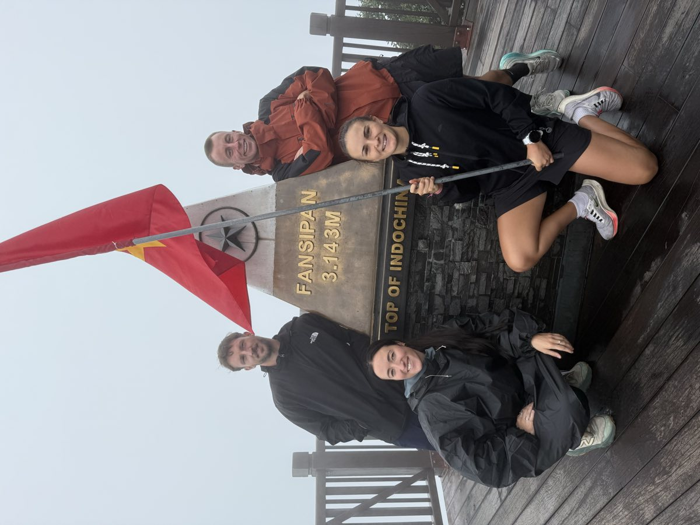
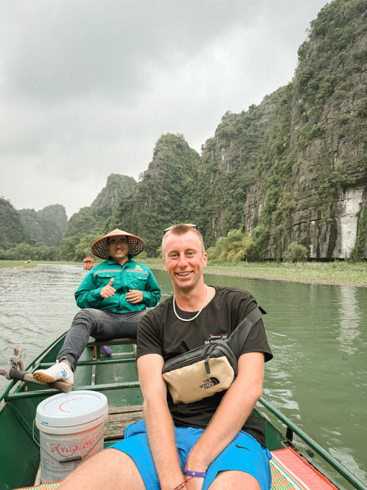
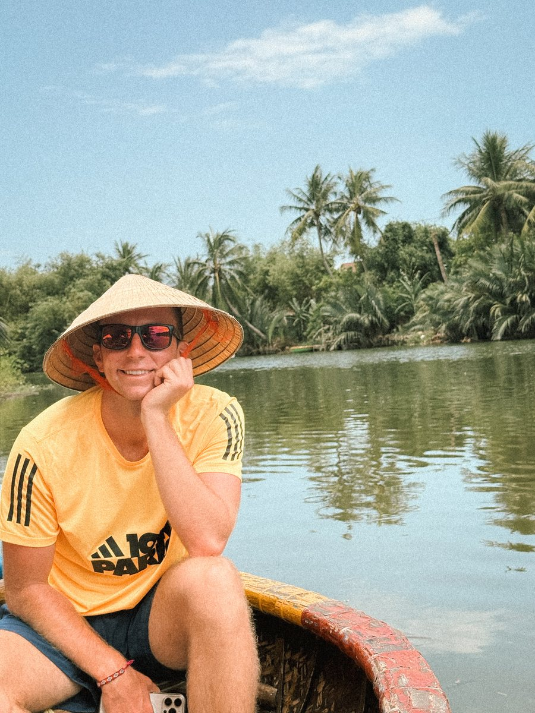
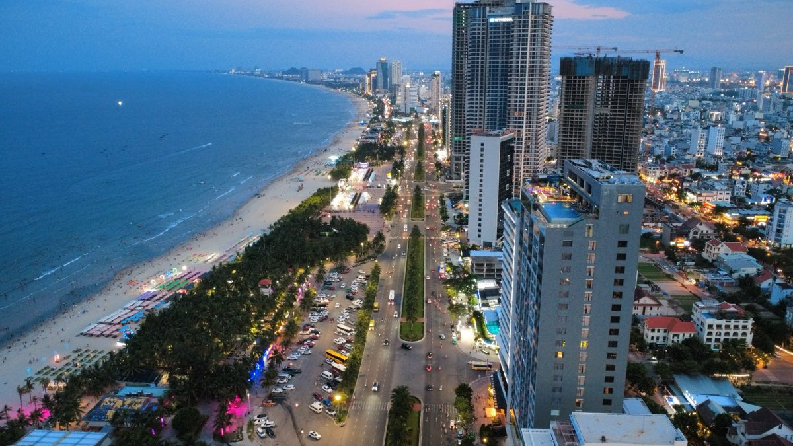
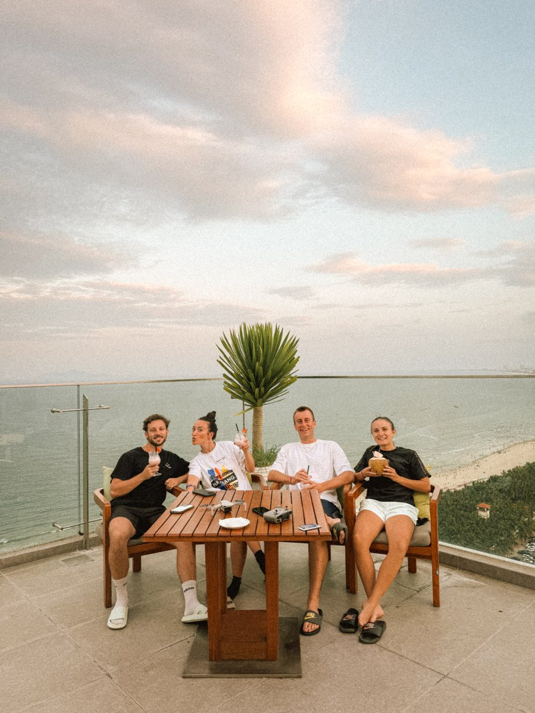

When to go
Vietnam is too long to have a single season. What is true in Hanoi is not true in Hoi An on the same day.
In the north, the best windows are September to November and March to May. Winter is cold and misty in the mountains, summer is hot and stormy. The rice terraces of Sapa are green in summer and golden around September.
In the centre, the dry season runs from February to August. From September to November, it is typhoon season, and Hoi An ends up underwater almost every year.
Another date to know: Tet, the lunar new year, between late January and mid February depending on the year. The whole country travels, transport is full and many shops close for several days.

We went in July, and only in the north. It is the rainy season, and we got some heavy downpours in Sapa. Over three weeks, it was still fine.
I will be honest: it is not the best time for Vietnam. We worked with our dates, not with the ideal. If you have the choice, aim for autumn in the north.
The real budget
Daily life costs little: street food, nights in guesthouses and bus journeys are all very affordable.
It is the organised blocks that push the bill up. A bay cruise, the Ha Giang loop with a rider, a guided trek around Sapa. Three lines that weigh more than two weeks of meals.
A night. From 10 to 30 €. And for 10 € you already get something very nice, the country has beautiful hotels for not much. Even less in a hostel.
A meal. Between 2 and 8 €.
A night bus. Between 10 and 20 € per journey. To compare schedules and prices, the 12Go Asia app brings everything together in one place.

My itinerary
Seven stops, from the north to the centre. Hanoi is the pivot towards the mountains, then you come back down along the coast.
- HanoiThe Old Quarter and the starting point for the north
- Lan Ha BayOne or two nights on the water, south of Cat Ba
- SapaRice terraces and trails between the hamlets
- Ha Giang loopThree hundred kilometres of mountains, along the Chinese border
- Tam CocA boat on the Ngo Dong and the steps of Hang Mua
- Hoi AnA listed old town, lanterns and the beach by bike
- Da NangThe coastal base, between the beach and the Hai Van Pass

Hanoi
The Old Quarter, its pavements full of plastic stools and its traffic you learn to cross with nerve.
Hoan Kiem Lake early in the morning, Train Street, and above all the food. It is also the starting point for everything heading north.

Lan Ha Bay
The direct neighbour of Ha Long Bay, south of Cat Ba. The same limestone peaks rising out of the water, with far fewer boats.
You visit it on a one or two night cruise, with kayaking between the islets and swimming from the boat.

Sapa
The mountains of the north west, five or six hours' drive from Hanoi. Rice terraces as far as the eye can see and villages of the Hmong and Dao peoples.
The centre of Sapa has been heavily built up. Everything happens outside it, on the trails between the hamlets.


Above the valley, Fansipan rises to three thousand one hundred and forty three metres. It is the highest peak in Indochina. You can climb it on foot in two days or reach it by cable car from Sapa.


The Ha Giang loop
The far north, along the Chinese border. A loop of about three hundred kilometres, to do in three or four days.
The part everyone comes for is the Ma Pi Leng Pass, and the canyon of the Nho Que river below.
Two ways to ride it: drive yourself, or sit behind a local rider. Without a valid motorbike licence, the second option is the only sensible one, since insurance covers nothing if something goes wrong.
The details of the loop, stage by stage, with the border area permit that is now compulsory, are in the guide dedicated to Ha Giang.


Tam Coc
In the Ninh Binh region, often called Ha Long Bay on land. The same limestone peaks, but set among the rice fields.
You go down the Ngo Dong river by boat, rowed with their feet by the boatmen, and climb the steps of Hang Mua for the full view.


Hoi An
The listed old town, its yellow facades, its lanterns and its river. The crowds are real, and so is the late afternoon light.
An Bang beach is a few kilometres away by bike, and the town's tailors make clothes to measure in twenty four hours.
Right next door, the Cam Thanh coconut forest is explored by basket boat, those small round boats made of woven bamboo.

Da Nang
The big city of the central coast, about forty minutes from Hoi An. A long beach, modern buildings, the Dragon Bridge and the Marble Mountains.
It is the practical base for the region: an airport, cafés to work in, and the Hai Van Pass just to the north.


Our plan, night by night.
Two nights in Hanoi, then a minivan to Cat Ba. One night on board in Lan Ha Bay, with Peony Cruise. Then a night bus to Sapa.
Three nights in Sapa, then a bus to Ha Giang. Three nights on the loop. A night bus to Tam Coc.
Three nights in Tam Coc, a night bus to Hoi An. Two nights in Hoi An, then an hour by Grab to Da Nang, and two nights to finish.
Night buses are really good in Vietnam, and it is an experience worth trying at least once. You pay for the journey and the night in one go, for very little.
Getting around
The night bus is the backbone of the trip. Sleeper buses have real reclining berths on two levels, and link the main stops while you sleep. A night of travel saved is one less night in a hotel.
A few habits that change everything: aim for a lower berth, at the front rather than above the wheels, bring a jumper because the air conditioning runs at full blast, and keep your valuables on you. Shoes come off at the door, and you are given a bag to put them in.

The train runs along the coast from north to south. It is slower than a bus, more comfortable, and the section between Hue and Da Nang goes over the Hai Van Pass, along the cliffs.
For short journeys, Grab works in all the big cities, by car or motorbike. And the scooter is still the best way to explore around a stop, with the right licence.
Where to stay
Three weeks and seven stops, so very different places to stay from one end to the other.
The city hotel, cheap in Hanoi's Old Quarter as in Hoi An, almost always with breakfast. One thing to check in Hanoi: the buildings are tall and narrow, and there is not always a lift.
The homestay, which is the norm in Sapa, on the Ha Giang loop and in Tam Coc. A simple room, meals shared with the family. It is often the best memory of a stop.
The night bus berth, which replaces a hotel night on long journeys and saves you a day.
The boat, for Lan Ha Bay. The night on board is part of the trip, not just a place to sleep.
One thing to watch in the north. In Sapa and Ha Giang, it gets genuinely cold from December to February, and heating is not guaranteed. That is a question to ask before booking, not on arrival.
What we paid. Between 10 and 30 € a night depending on the stop. For 10 €, we already had very nice rooms: Vietnam is one of the countries where the value for money of accommodation surprises you the most.
Not to be missed
The Ma Pi Leng Pass on the Ha Giang loop, a night on the water in Lan Ha Bay, the trails around Sapa and the view from Hang Mua.
The rest depends on how much time you have and how many hours of bus you can take.
The Ha Giang loop, without hesitation. It is the stop we still talk about, and it has its own guide on this site.
And the two days with our guide in Sapa, with the night at her home and the walk through the rice fields. That is the video above.
Mistakes to avoid
The most common mistake is trying to do the whole country in two weeks. Vietnam stretches over almost one thousand seven hundred kilometres, and every stop costs a night on a bus or a flight.
The second is renting a motorbike without a valid licence. It is common, it is tolerated, and it becomes very expensive at the first accident.
Nothing went wrong, because the trip was well organised in advance. In such a long country, that is where it all happens. If you want us to build your itinerary together, let's talk about it.
The only thing I would do differently: the dates. July in the north is the rainy season, and we knew it when we left.
What to pack
Vietnam goes through several climates in a single trip. That is what makes packing harder than elsewhere in Southeast Asia.
Layers. It can be ten degrees in Sapa and thirty in Hoi An in the same week. A light fleece and a windbreaker solve the problem without taking up space.
Something for the rain. A poncho covers your bag as well as you, which an umbrella does not do on a scooter. Quick drying shoes are better than waterproof ones.
For night buses. A padlock for the bag in the hold, earplugs and an eye mask. Valuables stay with you, never in the hold.
For the Ha Giang loop. Gloves, a windproof jacket and glasses. You ride for several hours a day at altitude, and the cold comes quickly on the passes.
Electricity. Vietnam runs on 220 volts, with type A, C and F sockets depending on the place. European plugs work almost everywhere, and a universal adapter handles the exceptions.
What mattered for us: rain gear. We were there in July, right in the rainy season, and it is the item that makes the difference between a ruined day and a normal one.
Shall we plan your trip together?
This guide gives you the outline. If you want to go further, I build your itinerary with you: the route stage by stage, where to stay, the journeys between towns and the activities that are really worth the day.
We start from your dates, your budget and what you want to experience. You leave with a plan that is ready to follow, knowing what to book in advance and what can wait until you get there.
Three packages, from 59 € for feedback on your plan to 249 € for the full itinerary. The first chat is free, with no commitment.
The links and gear mentioned
The booking platforms, eSIMs, banks and insurance I use when I travel are all on one page, with my referral codes.
Page checked and updated on .